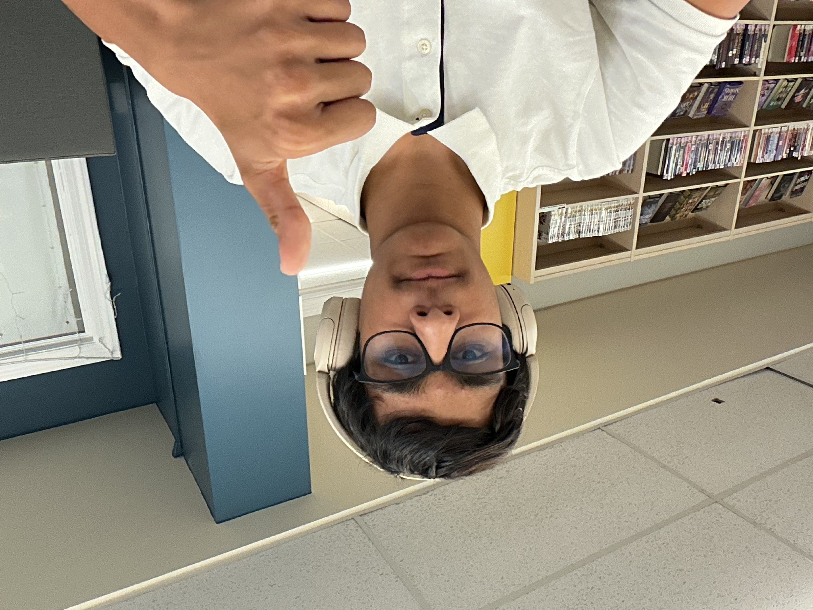

About Me
My background
I grew up in Hoboken, New Jersey. I moved to Ridgewood when I was 10 years old. I'm a freshman in Bergen County Technical Schools in Teterboro, in the computer science program
I've been passionate about computers since I was young. The event that really sparked my interest in computer science was in seventh grade when I heard of BCTS, and I researched the CompSci program. After doing so, I sought out technology.
Technical Skills
- Currently Learning: HTML5, CSS3, JavaScript, Chrome DevTools
- Tools: VS Code, Git, GitHub, Chrome Devtools
- Future Courses:Python and Intro to Machine Learning and AI, Advanced Programming(Back end Frameworks) and Game Development
- CS Capstone Project: Senior year and Intro to Computing(Java)
Education
Bergen County Tehnical Schools - Teterboro
Computer Science Program
Class of 2029(Freshman)
Current Course: Introduction to Programming
Career Goals
I'm interested in become a software engineer for tech companies who's content I've enjoyed in the past. i.e: Team Cherry, Amazon, Google, sega, microsoft, nintendo etc. I'm also intersted in theoretical computer science, and I aspire to even the gap between corporate technology and theoretical technology.